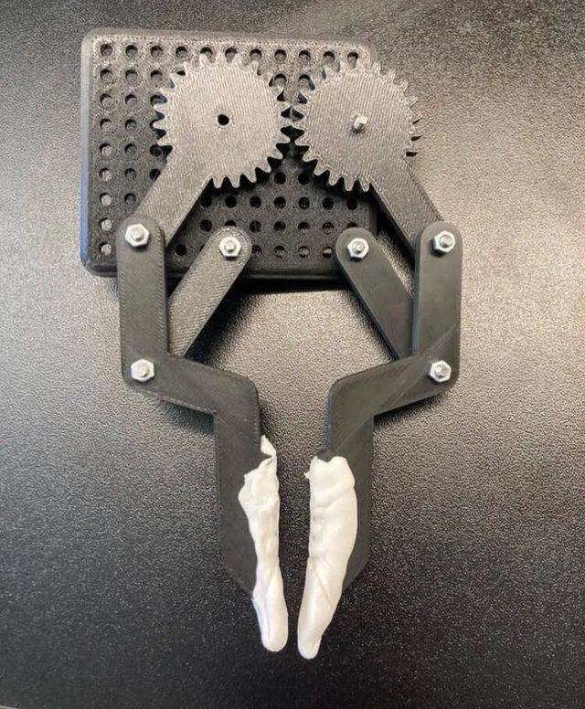
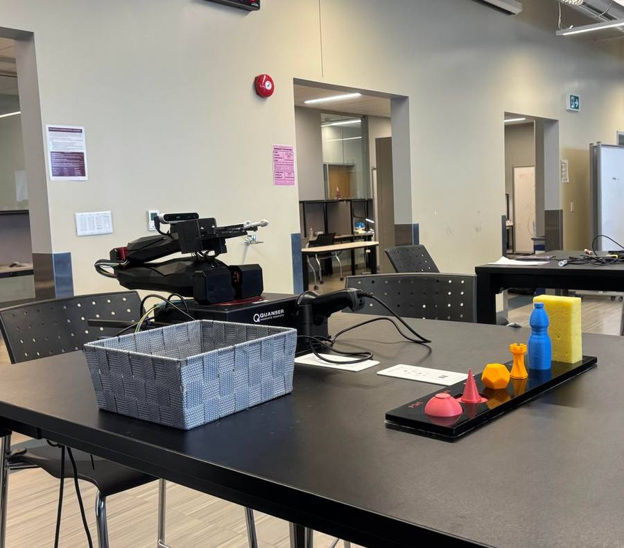
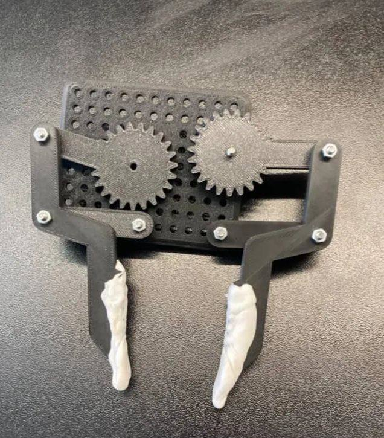

Robotic End Effector (Q-Arm Gripper)
A servo-driven pinch gripper for a Q-Arm robot, built for warehouse-style pick and place. I was project manager and lead mechanical designer, and I wrote the Python "LookUp Products" function.

Photos


Overview
Modern warehouses process thousands of packages each day, yet many robotic grippers lack the adaptability to handle the wide range of shapes and fragilities found in real-world items. That contributes to delays, product damage and higher costs.
My primary role was coordinating team tasks, managing timelines and making sure project milestones were met. Technically, I led the mechanical design and iteration of the gripper in CAD, coordinated assembly and testing, and implemented the "LookUp Products" function in software. The goal was a functional end effector for a warehouse-style pick and place process.
Challenges
Time management was hardest early on, especially fitting sustainability and risk-mitigation ideas into a tight timeline. Feedback sessions with peers and instructors helped turn those goals into design decisions: simpler mechanisms, less material, and reliability over complexity.
Later, the design had mechanical issues: gears too small to provide enough torque, and uneven load across the gripper arms. I owned fixing them, which meant reallocating time for redesign and testing. I held extra meetings outside class and built buffer time into the schedule.
Performance was also inconsistent between test sessions. The gripper grasped a sponge in early trials but failed in the final test, because the opening had been designed exactly around the sponge's original dimensions. Smooth objects slipped, so we added ridges to the fingers, and when slipping continued I proposed and started using Sticky Tack at the tips to raise friction.
In the LookUp Products code, which accepts user input, searches products.csv and returns valid product and price pairs with warnings for missing items, the first version mishandled string cleaning and splitting, causing wrong combinations and failed matches. I fixed it by refining the string cleaning and correcting the splitting logic.
What I learned
Effective project management means anticipating ambiguity and dealing with it early, being specific about goals, and keeping a buffer of time. Even tiny details like spacing, alignment and component fit affected the gripper's efficiency. I also learned to design in margins for variation in object size and shape, and to recognize when it is better to press ahead than keep refining.
If I did it again, I would add more structured testing points across the timeline.
Outcome
The gripper was functional and met the main requirements, and it could pick up most of the objects. It could be more flexible for a wider range of shapes, with more margin for irregular objects. As manager, I considered the project a success: milestones and objectives were completed.